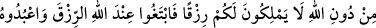
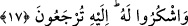
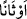
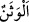
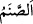
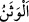
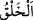
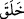
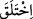

hiç bir şeyi ortak koşmayın.
İşte Allah’a bu şekilde ibâdet etmeniz ve ondan korkmanız; şu anda içinde
bulunduğunuz küfür hâlinden daha hayırlıdır.
“Eğer” hayrı ve şerri “bilmiş olsanız,” birini diğerinden ayırabilseniz “bu sizin için
daha hayırlıdır.”
Allah’a ibâdetin dışındaki şeylerde aslâ hayır olmadığı halde, âyet-i kerimede “daha
hayırlı” şeklinde ism-i tafdil sigasının kullanılması, onların bâtıl iddiâları itibâriyledir.
17. Siz Allah’ı bırakıp birtakım putlara tapıyor, asılsız sözler uyduruyorsunuz.
Bilmelisiniz ki, Allah’ı bırakıp da taptıklarınız, size rızık veremezler. O halde rızkı
Allah katında arayın. O’na kulluk edin ve O’na şükredin. Ancak O’na
döndürüleceksiniz.
“Siz Allah’ı bırakıp bir takım putlara tapıyor,”
“__WORD__; “ __WORD__ (put)” kelimesinin çoğuludur. Müşrikler için yapılmış heykeller olup
başkaca bir özelliği yoktur.
Bazıları demiştir ki; Ağaçtan, altından ya da gümüşten insan şeklinde yapılmış, kalıba
dökülmüş puta “__WORD__ denir. “__WORD__ ise böyle değildir; o sadece taştan yapılır ve insan
şeklinde de değildir.
“Asılsız sözler uyduruyorsunuz.”
Rağıb Isfahânî der ki: “__WORD__ (yaratma)” kelimesi insanlar için genellikle şu iki
mânâda kullanılır: Birincisi takdir etmek, ölçmek, düzeltmek mânâsında; ikincisi, yalan
mânâsında.
Keşfü’l-esrâr’da kaydedildiğine göre “__WORD__ ve “__WORD__ fiillerinin anlamı, eliyle veya
diliyle iftirâ etti, demektir. Putları yontmak, eliyle iftirâya misaldir. Yalanın en kötüsüne
“ifk” denir. Buna yalan denilmesinin sebebi, yüzüstü haktan çevrilmiş ve saptırılmış
olmasından dolayıdır.
Mânâ şöyledir: Siz onlara “ilâhlar” demekle ve onları Allah katında “şefâatçılar”
diye çağırmakla yalan söylüyorsunuz.
Bu onların kötü hallerine bir istidlâldir, çünkü bu sözlerin yalan ve bâtıl oluşu apaçık
ortadadır.